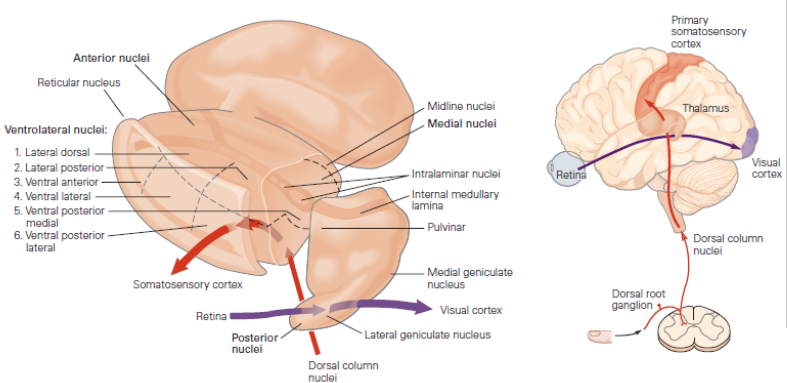

<main>
    <section class="section">
        <div class="container narrow">
            <h1 class="">Tálamo - Portal do Córtex</h1>
            <article class="doc-content">
                <div class="doc-content">
                    <p>
                        O tálamo é uma estrutura em forma de ovo, localizada no diencéfalo acima do tronco encefálico e abaixo do córtex cerebral. Ele atua como
                        uma estação de retransmissão crucial para a maioria das informações sensoriais que chegam ao cérebro, exceto as informações
                        olfativas. O tálamo processa e integra essas informações antes de enviá-las para as áreas apropriadas do córtex cerebral para
                        interpretação e resposta.
                    </p>

                    <h2>Funções</h2>
                    <ul>
                        <li>
                            Atua como um “controlador” para as informações que vão em direção ao córtex cerebral, impedindo ou estimulando a passagem
                            de informações específicas, conforme o estado comportamental do organismo e suas necessidades. Pode ser comparado a um
                            filtro ou modulador: controla a atividade dos neurônios retransmissores do tálamo, ajustando quanta informação sensorial
                            chega ao córtex.
                        </li>
                        <li>
                            O tálamo é um bom exemplo de uma região encefálica composta de vários núcleos bem delimitados. São 50 núcleos talâmicos já
                            identificados. Alguns núcleos recebem informação específica de uma modalidade sensorial e projetam-se para uma área
                            específica do neocórtex. Por exemplo, células no núcleo ventral posterior lateral (onde termina o lemnisco medial)
                            processam informação somatossensorial, e seus axônios projetam-se para o córtex somatossensorial primário. Projeções
                            originadas nas células ganglionares da retina terminam em uma outra porção do tálamo chamada núcleo geniculado lateral.
                            Neurônios desses núcleos, por sua vez, se projetam para o córtex visual. Outras porções do tálamo participam das funções
                            motoras, transmitindo informação do cerebelo e dos núcleos da base para as regiões motoras do lobo frontal. Axônios das
                            células do tálamo que se projetam para o neocórtex passam pela coroa radiada, um grande feixe de fibras que carrega a
                            maior parte dos axônios que trafegam dos e para os hemisférios cerebrais. Através de suas conexões com o lobo frontal e o
                            hipocampo, o tálamo pode desempenhar um papel em funções cognitivas, como a memória. Alguns núcleos que podem ter um papel
                            na atenção projetam-se de forma difusa para várias, porém distintas, áreas do córtex.
                                
                        </li>
                        <li></li>
                        <li></li>
                        <li></li>
                        <li></li>
                        <li></li>
                        <li></li>
                    </ul>

                    <h2>Partes Constituintes</h2>
                    <p>
                        
                    </p>
                    <ul>
                        <li>Cervical - percepção sensorial e função motora do pescoço, braços e porção posterior da cabeça.</li>
                        <li>Torácica - inervam a porção superior do tronco.</li>
                        <li>Lombar - inervam a porção inferior do tronco, as costas e as pernas.</li>
                        <li>Sacral - inervam a porção inferior do tronco, as costas e as pernas.</li>
                    </ul>

                    <h2>Organização Substância Cinzenta</h2>

                    <ul>
                        <li>
                            Todas as formas de informação sensorial do tronco e dos membros entram na medula espinhal, que apresenta uma região
                            central de substância cinzenta em formato de H (borboleta) onde os corpos celulares dos neurônios estão localizados.
                        </li>
                        <li>
                            A maior parte dos axônios descendentes originados no encéfalo termina no nível cervical, com quantidades progressivamente
                            menores de vias seguindo em direção aos níveis mais baixos da medula. Assim, o número de fibras na substância branca é
                            maior nos níveis cervicais (onde está a maior parte das fibras ascendentes e descendentes) e menor nos níveis sacrais.
                            Como resultado, a região sacral da medula possui bem menos substância branca do que cinzenta, enquanto a região cervical
                            tem mais substância branca do que cinzenta.
                        </li>
                        <li>
                            A substância cinzenta é cercada por uma substância branca formada por axônios mielinizados que realizam conexões tanto
                            longas quanto curtas. A substância cinzenta de cada lado da medula é dividida em cornos dorsais (posteriores), cornos
                            ventrais e zonas intermediárias.
                            <br /><br />
                            
                        </li>

                        <li>Corno dorsal - aferências sensoriais</li>
                        <li>
                            Zona intermediária - funciona como um “mini-centro de decisão local”, capaz de tratar estímulos de forma rápida, sem
                            esperar a análise cortical, no entanto também coordena a execução de comandos recebidos do encéfalo.
                        </li>
                        <li>Corno ventral - projetam seus axônios para inervar os músculos.</li>
                        <li>Corno lateral - especializado em comandos autonômicos, sistema simpático e parassimpático.</li>
                        <li>Colunas dorsais (branca) - feixes de axônios ascendentes (epicríticos)</li>
                        <li>Colunas laterais (branca)</li>
                        <ul>
                            <li>ascendente - protopáticos (dor e temperatura) e propriocepção inconsciente</li>
                            <li>descendente - controle e ajuste motor</li>
                        </ul>
                        <li>Colunas ventrais (branca)</li>
                        <ul>
                            <li>ascendente - tato grosseiro e pressão</li>
                            <li>descendente - controle motor, postura e equilíbrio.</li>
                        </ul>
                        <li>
                            A substância cinzenta da medula espinal tem um aspecto segmentado, não é um tecido totalmente contínuo e homogêneo como
                            parece num desenho em corte. As colunas aparecem em grupos ou núcleos segmentares, que se repetem ou desaparecem em certos
                            níveis da medula.
                        </li>
                    </ul>

                    <h2>Aferências e Eferências</h2>
                    <p>
                        <span>1 - Visite o link </span
                        ><span
                            ><a
                                href="https://www.google.com/url?q=https://kumu.io/gdms/snc%23integracao-aferencias-e-eferencias/aferencias-eferencias&amp;sa=D&amp;source=editors&amp;ust=1761390868345874&amp;usg=AOvVaw0R7snreWB24_2CXfjbEtWf"
                                >https://kumu.io/gdms/snc#integracao-aferencias-e-eferencias/aferencias-eferencias</a
                            ></span
                        ><span> </span>
                    </p>
                    <p><span>2 - Selecione na parte inferior, nos botões de filtro a Medula.</span></p>
                    <p>
                        <span
                            >3 - Clicando na aresta de conexão, que possui direção, será possível visualizar detalhes sobre a conexão, veja a imagem
                            abaixo:</span
                        >
                    </p>
                    <p>
                        <span></span>
                    </p>
                    <p><span></span></p>
                    <h4>Importante</h4>
                    <p>
                        <i
                            >Estudos neurofisiológicos têm demonstrado que nos núcleos da coluna dorsal e talâmicos ocorre uma transformação
                            considerável da informação. Como regra, a informação é alterada a cada vez que passa por sinapses no encéfalo. Os
                            neurônios tanto dos núcleos do tálamo como dos núcleos da coluna dorsal são controlados por aferências do córtex cerebral.
                            Consequentemente, a eferência do córtex pode influenciar a aferência para o próprio córtex.
                        </i>
                    </p>

                    <h2>Disfunções</h2>
                    <p></p>
                </div>
            </article>
        </div>
    </section>
</main>
